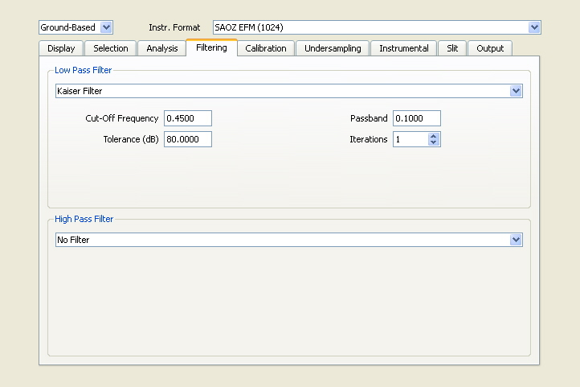

QDOAS Projects Properties : Filtering page

Filtering attenuates components in the spectra with frequencies higher (low-pass filtering) or lower (high-pass filtering) than a given cut-off frequency. This simple method can improve the analysis of noisy spectra but may lead in the other hand to a loss of spectral information and should be used very carefully. Filtering corresponds to a convolution in the pixels domain. The most common filter functions are implemented :
| Kaiser | the algorithm is described in the paper Kaiser and Reed, 1977; |
| Boxcar | convolution with a rectangle function; this filter consists in averaging the spectrum over several spectral points; |
| Gaussian | convolution with a Gaussian function; |
| Triangular | convolution with a triangle function; |
| Savitzky-Golay | this filter uses a least-square linear regression fit of a polynomial of degree k over at least k+1 data points around each point in the spectrum; |
| Binomial | convolution with a filter function formed with the binomial coefficients calculated using the recursive Pascal's triangle algorithm; |
| Odd-even correction | smoothing obtained by averaging spectra interpolated on odd and even pixels. |
Further details on these filters can be found in the literature.
According to the selected filter, different fields have to be completed.
Select filter type No Filter if you want to disable spectra and cross-sections filtering.
Low-pass filtering is applied to the spectra and to the cross-sections. Nevertheless, the filtering of cross-sections could be disabled individually in the Analysis windows properties dialog box.
Cross-sections are filtered by subtracting (optical density fitting) or dividing (intensity fitting) a fitted polynomial or a smooth spectrum calculated by filtering the original cross-sections a high number of times. This can be an alternative to the Gram-Schmidt algorithm to calculate differential cross sections.
For the moment, high-pass filtering is supported only in optical density fitting mode. It can be applied during the phase of calibration and/or during the analysis of spectra.